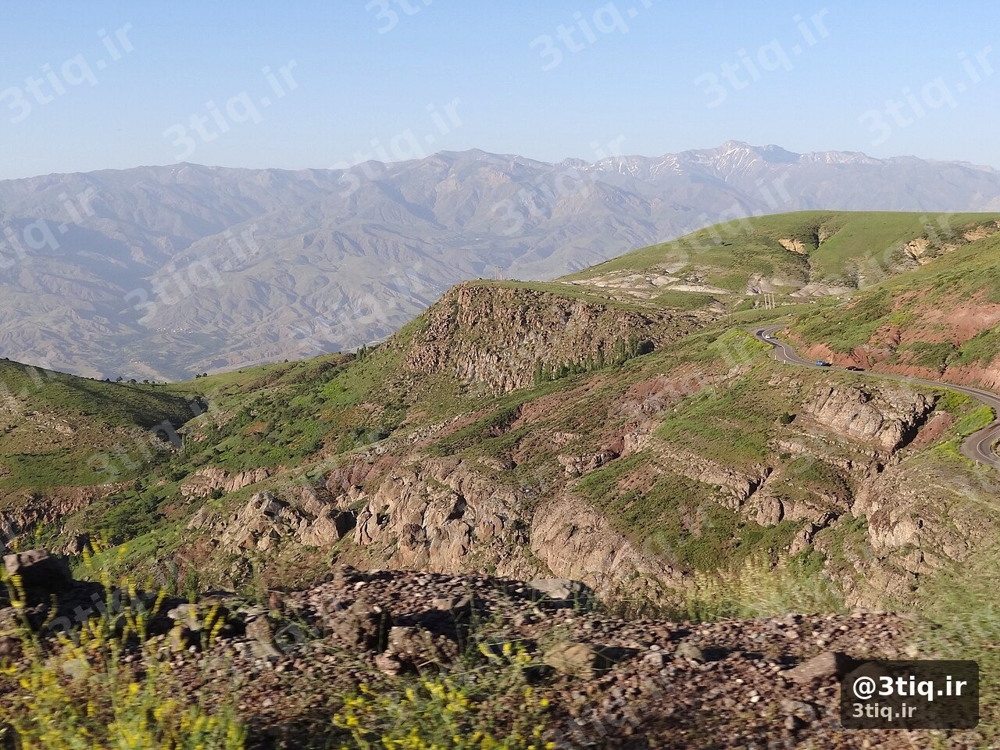
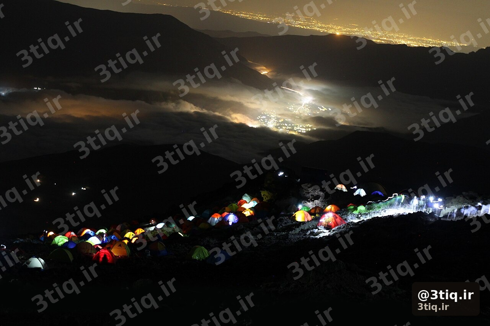

۳۰–۶۰
دقیقه تا برپایی کمپ
−۱۰°C
افت شبانه رایج
۳ لایه
سیستم لباس شب
۰ زباله
قانون ترک محل
خیلی از صعودهای جدی ایران — از هزار و زردکوه تا دماوند — نیاز به شبمانی دارند. کمپ زدن فقط «چادر زدن» نیست؛ انتخاب محل، مدیریت سرما، آب، غذا و ایمنی شب، کیفیت صعود فردا را تعیین میکند.

انتخاب محل کمپ
- زمین نسبتاً تخت و بدون سنگهای ناپایدار بالای سر
- دور از مسیر سیلاب و کف دره تنگ — حتی اگر امروز خشک است
- پناه باد: پشت پشته یا صخره، نه روی ridgeline باز
- فاصله از آب جاری: حدود ۶۰–۱۰۰ متر (حفظ منابع و کمتر شدن حشرات/حیوانات)
- دسترسی صبح: مسیر فردا را از قبل ببین؛ در مه پیدا کردن مسیر سخت میشود
🏕️ قانون طلایی
کمپ را قبل از غروب برپا کن. در تاریکی، اشتباه در انتخاب محل و بستهشدن چادر چند برابر میشود.
تجهیزات شبمانی
چادر
چادر سهفصل با پوشش باران کامل برای اکثر برنامههای بهار تا پاییز کافی است. در باد شدید، طناب و میخ اضافه داشته باش. اگر پناهگاه ساختمانی نیست (مثل کمپ هزار)، چادر گزینه اصلی است — نه فقط کیسه بیواک.
کیسه خواب و پد
- دمای راحتی کیسه را برای شب قله/کمپ انتخاب کن، نه دمای شهر
- پد عایق (foam یا inflatable) از یخزدن از زمین جلوگیری میکند
- لباس خشک شب را جدا در کیسه پلاستیکی نگه دار
لباس لایهای
شب در ارتفاع سریع سرد میشود. سیستم لباس سهلایه + کلاه و دستکش را جدی بگیر؛ حتی اگر روز گرم بوده باشد.

آب و غذا
- آب شب و صبح را از قبل ذخیره کن — یخزدن بطری را در نظر بگیر
- غذای گرم ساده (سوپ، نودل، اسنک کالریبالا) برای ریکاوری مهم است
- برای ارتفاع، آبرسانی را حتی در شب فراموش نکن
- زباله را کامل جمع کن — هیچچیز در محل نماند
ایمنی شب
- چراغ قوه/هدلامپ با باتری اضافه برای همه اعضای تیم
- تلفن و پاوربانک در جای گرم (نزدیک بدن) تا باتری سریع نخوابد
- اگر علائم ارتفاعزدگی دیدی: پایینرفتن اولویت دارد، نه «خوابیدن تا صبح»
- پیشبینی شبانه را چک کن — آبوهوا و باد شدید میتواند چادر را تهدید کند
- اطلاعرسانی به فرد خارج از برنامه: محل کمپ و زمان بازگشت
⚠️ اشتباه خطرناک
کمپ روی برف فشرده بدون پد عایق، یا خوابیدن با لباس خیس عرقکرده روز، از شایعترین دلایل شبهای سخت و افت دمای بدن است.
روال پیشنهادی عصر تا صبح
- رسیدن به محل → انتخاب نقطه امن → برپایی چادر
- تعویض لباس خشک → آب جوش / غذای گرم
- آمادهسازی کولهفردا (کرامپون، هدلامپ، آب) قبل از خواب
- خواب زود — برای حرکت صبح خیلی زود
- جمعکردن کامل کمپ، بدون باقیماندن زباله یا میخ
اشتباهات رایج
- کمپ خیلی دیر و در تاریکی
- اعتماد کامل به پناهگاه بدون plan B (چادر/بیواک)
- کمآوردن آب برای شب و صبح
- نادیده گرفتن باد و جهت درب چادر
- نداشتن لباس خشک شبانه
✅ جمعبندی
محل امن + چادر/کیسه مناسب + لباس خشک + آب/غذا + خروج بدون زباله. شب خوب، صعود فردا را ایمنتر و لذتبخشتر میکند. برای برنامههای دو روزه مثل هزار این مهارت ضروری است.
قبل از هر برنامه چندروزه، چکلیست قبل از صعود و صفحه پناهگاهها را هم مرور کن.